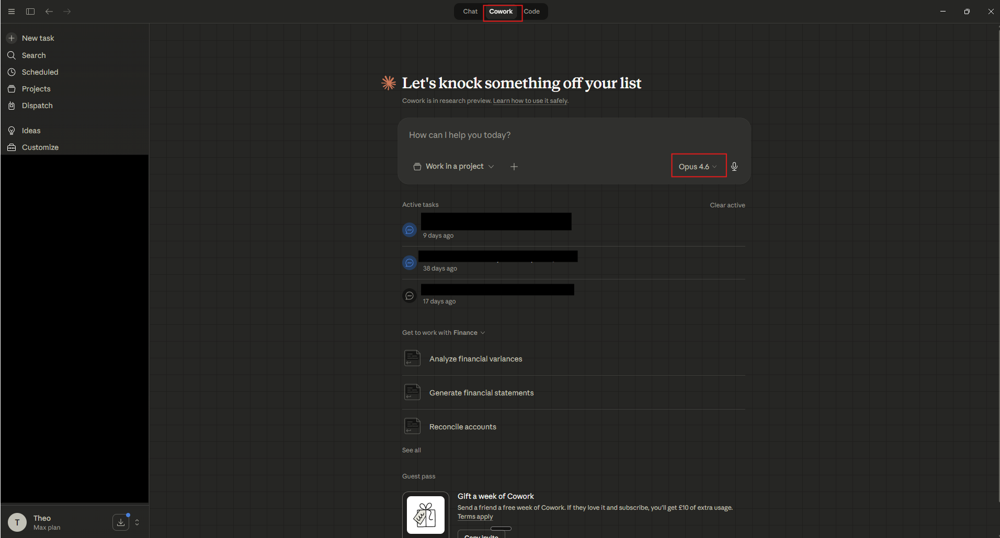

A practical guide to understanding and working with Quarri through Claude - querying data, building automations, saving skills, and more.
Claude is an AI assistant built by Anthropic. It’s available as a desktop application (Mac and Windows) that you interact with through natural language - you type questions or instructions and Claude responds with answers, analysis, code, documents, or actions.
Claude is a large language model (LLM). That means it’s extremely capable at reasoning, writing, analysis, and working with data - but it’s also non-deterministic by nature. Two identical prompts may produce slightly different outputs. This is important to keep in mind when using Claude for data analysis (more on this below).
Claude supports connectors - integrations that give it access to external tools and data sources. Quarri is one of these connectors.
You can drop files directly into Claude - spreadsheets, PDFs, Word documents, images, CSVs - and Claude can read, analyse, and work with them. When combined with Quarri, this means you can upload a document and ask Claude to cross-reference it against your database, or drop in a spreadsheet and ask it to reconcile against your live data.
Claude can also build PowerPoint presentations directly. You can describe the slides you need and Claude will generate a .pptx file. Combined with Quarri, this means you can create data-driven presentations that pull live numbers from your database - then save the workflow as a skill so the presentation can be regenerated with updated data whenever you need it.
Quarri is a data platform that connects your company’s databases and data sources to Claude. It provides a set of deterministic tools - tools that produce exact, repeatable results every time - for retrieving, querying, and working with your data.
Where Claude is an LLM that reasons and generates, Quarri’s tools are precise and traceable. When Quarri retrieves data from your database, it runs an exact SQL query and returns exact results. There’s no interpretation or generation involved in the data retrieval itself - the data you get back is the data in your database.
Quarri also provides a persistent storage layer. You can save dashboards, reports, skills (saved workflows), business logic, and metrics into Quarri so they’re available across sessions. Anything saved in Quarri can be retrieved from Claude or viewed at app.quarri.ai.
The combination of Claude and Quarri gives you the best of both worlds: Claude’s natural language understanding and reasoning paired with Quarri’s deterministic, precise data tools.
In practice, this means you can describe what you need in plain English, and Claude will use Quarri’s tools to query your database, build reports, generate dashboards, and execute workflows - all with traceable, auditable data underneath.
The diagram below shows where Quarri sits: a deterministic data layer underneath whichever LLM your team uses. Claude reads from and writes to it, while Quarri handles the data work - connectors, schema, context and tools - precisely and repeatably.
Because Quarri’s data retrieval is deterministic, the data itself is always accurate. However, when Claude analyses or interprets that data - drawing conclusions, computing summaries, or pulling in external information - it’s using its LLM capabilities, which are not deterministic. This means:
A good habit: for anything high-stakes, ask Claude to show its working and check its results. Storing datasets in Quarri (rather than having Claude pull them ad-hoc from the web) is one way to keep things deterministic and reliable.
Everything you build in Quarri is assembled from a few simple building blocks. Quarri can take in live connections to your systems and manual tables you maintain yourself, layer metrics and business rules on top, and wrap repeatable processes up as skills. The sections that follow go deeper on each - this is the map.
| Building block | What it is | How you use it |
|---|---|---|
| Connectors | Live feeds from your systems - ERP, Shopify, databases, IoT. | Set up by the Quarri team; data flows in and stays current automatically. |
| Manual tables | An editable table you maintain inside Quarri - effectively a workbook that lives in the database. | Create and update in plain English, or ingest an Excel/PDF to populate it. |
| Metrics | A saved computation mapped to a word or phrase. | Define it once, then just ask for it - Claude applies the same formula every time. |
| Skills | Saved multi-step workflows and fixed outputs. | Build once, run on demand - a report, a journal, a reconciliation. |
| Memory | Rules, definitions and company context. | Stored once and applied automatically on every relevant query. |
A manual table is the right home for data that doesn’t live in a connected system - membership values, contracts, a mapping table, budget figures. You maintain it inside Quarri and update it any time in natural language, or by dropping in a file. For higher volumes, the Quarri team can set up a document-ingestion route (an upload ticket plus a saved script) so a skill can sweep a ledger or a set of invoices straight into the table.
You can export any manual table back to Excel at any time - ask Claude to use the Data Retrieval skill so large tables don’t overload the conversation.
A metric stores a calculation once and ties it to the words you’d naturally use, so the number is consistent everywhere. You can tag a metric in the semantic layer so that whenever anyone asks for it, Claude uses the agreed formula rather than improvising.
Build a few of these and you can roll them into a single headline number - for example a net revenue metric that combines every component metric and respects your GL mapping.
The same building blocks support everything from a one-line answer to a full interactive application. It’s worth knowing the range, so you can aim higher than just pulling numbers.
Live, saved and shareable. Charts, tables and KPIs that stay connected to your data and refresh on their own - viewable in Quarri or shared as a link.
e.g. a daily sales dashboard that updates from your live order dataRepeatable processes that combine data, business rules and a formatted output - saved as skills and run on demand or each period.
e.g. a daily sales journal that generates a posting-ready Excel on requestFull operational tools, not just views. A purchase-order optimiser and production planner is a good example - built in about a day on a snapshot of a live system.
e.g. a PO & production scheduler for a sawmill (illustrative, anonymised below)This tool sequences a purchase-order book against real mill capacity. It can optimise for either goal - maximise orders shipped on time, or minimise total days overdue - and it re-plans live as things change.
Mill process & throughput - the optimiser is throttled by the slowest stage:
| Process stage | Role | Throughput (bf/wk) | Uptime | Status |
|---|---|---|---|---|
| Breakdown (head rig) | Saw logs | 38,400 | 90% | |
| Edging & trimming | Size & square | 31,200 | 92% | |
| Kiln drying | Dry to spec | 9,800 | 64% | ⚠ bottleneck |
| Planing | Surface & profile | 26,500 | 91% | |
| Grading & packaging | Grade & bundle | 22,300 | 93% |
Live run plan - auto-sequenced to clear the order book, routed through the real process and capped by the kiln:
| Run | Product | Volume | Priority | Target ship | Status |
|---|---|---|---|---|---|
| RUN-241 | 2×6 #2 & Btr | 18,000 bf | P1 · critical | +6 days | In progress |
| RUN-242 | 1×6 Select board | 9,500 bf | P1 · critical | +8 days | Scheduled |
| RUN-243 | 2×4 stud | 24,000 bf | P2 | +11 days | Scheduled |
| RUN-244 | 6×6 timber | 7,200 bf | P2 | +14 days | Queued |
Change an order, a priority or a throughput figure and the whole plan re-sequences automatically - and because it’s deterministic (ordinary code written around your data, not a probabilistic guess), the same inputs always produce the same plan.
Figures above are illustrative and anonymised.
Everyone who works with Quarri is a user - you query, build and save through Claude in the same way. What differs from one user to the next is the data access you’re granted: which sources you can see, how far into them you can go, and what you can add. Access is configured by your admin or the Quarri team, so each person sees exactly the data they should.
| What access governs | What it means for a user |
|---|---|
| Data sources | Which connected systems, tables and manual tables you can query and build from. |
| Row & column scope | You can be scoped to certain rows (e.g. your region or entity) or have sensitive columns hidden - the same question returns only the data you’re permitted to see. |
| Adding data | Within your permissions you can create and populate your own manual tables and ingest documents, then query them alongside everything else. |
| Building & sharing | Save dashboards, reports and skills into Quarri - keep them to yourself or share them with your team. |
Need access to a new source, or a wider view of an existing one? Ask your admin or the Quarri team and we’ll update your permissions.
If you’re not yet on a Claude Team or Enterprise subscription, go to File → Settings → Privacy and set “Help improve Claude” to Off. This prevents the model from training on your conversations. This is already disabled by default on Claude Team and Enterprise plans.
Quarri workflows involve complex, multi-step reasoning under the hood - schema discovery, SQL generation, data transformation, and reconciliation. Which Claude model and mode you use makes a real difference in how reliably these workflows run.
You can select the mode (Chat / Cowork / Code) at the top of the Claude desktop window, and pick the model from the dropdown in the prompt box, as shown below:

Once Quarri is connected to Claude, you can ask questions about your data in plain English. Claude queries your live database through Quarri’s data retrieval tools and returns results you can explore, filter, and export.
When you ask a question, Claude uses Quarri’s data retrieval tools to query your database, execute the analysis, and return results. All business logic is traceable - you can see the queries being run and the data behind every answer.
Beyond querying, Quarri supports building repeatable workflows and automations. These are processes that combine data retrieval, logic, and output - things you’d otherwise do manually in spreadsheets.
Describe what you want to Claude in plain language. For example:
Claude will use Quarri’s tools to build the logic, run the queries, and produce the output. Once you’re happy with it, you can save it as a skill (see Section 3).
Skills are saved workflows, reports, dashboards, and automations stored in Quarri. Once something is working the way you want, you can save it as a skill so that you or your team can reuse it without rebuilding from scratch.
To see what’s available, ask Claude:
Claude will return a list of all skills available to you. This includes both general skills (available to all Quarri users) and company-specific skills (built for your organisation’s data and workflows).
Once you see a skill you want to use, simply tell Claude:
Claude will load the skill, run it against your live data, and return the output - whether that’s a formatted report, a dashboard, an analysis, or an automated workflow.
When you’ve built something you want to keep - a report, dashboard, or automation - ask Claude to save it:
The skill will be saved in Quarri and available for future use.
If you need to modify a skill, ask Claude to retrieve it in detail:
Claude will return the skill’s full logic in natural language - every step, every rule, every data source. You can then iterate on it: change thresholds, add new fields, adjust the logic. When you’re happy, save the updated version back to Quarri.
A skill is a saved workflow - the logic, steps, and rules that produce an output. A dashboard is the final visual output itself: charts, tables, and KPIs rendered with a live API connection to your data.
When Claude builds a dashboard for you, you can save it directly into Quarri exactly as it appears. Saved dashboards maintain their live data connection, so the numbers update automatically. They can be retrieved from Claude in future sessions or viewed at app.quarri.ai.
You can also combine the two: save the workflow that builds a dashboard as a skill, so you can regenerate it with updated data anytime by loading the skill.
Beyond skills, Quarri has a persistent memory layer where you can store metrics, business logic, rules, and standard definitions. This means Claude applies your rules consistently every time.
When these are stored in Quarri, Claude can reference them automatically. For example, if you’ve defined how your monthly consolidation report should work - which systems to pull from, which rules to apply, and how to format the output - you can simply ask Claude to run it each month and the rules are applied consistently.
Claude is available as a plugin directly inside Microsoft Excel. Because the Excel plugin connects to your Claude account - and your Claude account has the Quarri connector - you can pull data from Quarri straight into your spreadsheets without leaving Excel.
The Claude panel sits in the right-hand sidebar of Excel. You interact with it the same way you would in the desktop app - type a question or instruction in natural language. Claude can read and write to cells in your workbook, and because it has access to Quarri, it can also query your live database.
Claude in Excel is available as an add-in. Once installed, click the Claude button in the Excel ribbon to open the panel. If your Claude account already has the Quarri connector set up, it will be available automatically - no additional configuration needed.
This is particularly useful for finance, operations, and any team that works primarily in spreadsheets. Rather than exporting data from one system and manually pasting it into Excel, you can query Quarri directly from inside your workbook.
Some skills rely on underlying data schemas - the structure that defines how your data is organised, what fields are available, and how tables relate to each other. Changes to data schemas can have significant downstream effects on existing skills and reports.
To prevent anything fundamental from breaking, schema changes are managed by the Quarri team. This means you have a safe space to create, edit, and save skills freely using the Quarri tools available to you, without the risk of disrupting the data foundations that everything runs on.
If a skill you’re building requires a schema change - for example, adding a new data source, creating a new calculated field, or restructuring how tables connect - reach out to the Quarri team and we’ll work with you to make the update.
Claude can pull data from external sources on the web - for example, weather data, CPI statistics, or other publicly available APIs. For one-off requests (e.g. “pull last month’s CPI data and add it to my report”), Claude can do this directly and there’s no additional cost or setup.
For live, ongoing connections or large datasets (e.g. historical weather data across multiple locations), contact the Quarri team. Claude has limits on how much data it can process in a single conversation, but Quarri is built to handle large volumes efficiently. We’ll set up a dedicated connector so the data flows in reliably, is stored at scale, and is available to all your skills and workflows.
The Quarri tools available to you through Claude focus on working with your data - everything outside of the underlying data modelling and schema management:
| Capability | What you can do |
|---|---|
| Data Retrieval | Query your live database in natural language. Ask questions, filter results, explore data interactively. |
| Querying & Analysis | Run complex analysis across connected data sources without writing SQL. Compare periods, segment data, calculate metrics. |
| Report Generation | Build formatted reports and summaries from your query results. Export to spreadsheets or other formats. |
| Dashboard Building | Create interactive dashboards from your data. Save them for reuse and share with your team. |
| Logic & Automations | Build repeatable workflows that combine data retrieval, business rules, and formatted outputs. |
| Skill Management | Save, retrieve, update, and organise skills. List available skills, load them, or iterate and save new versions. |
| Memory & Context | Store business rules, metrics, definitions, and workflow parameters. Claude references these automatically for consistent results. |
| Claude in Excel | Pull Quarri data directly into Excel spreadsheets. Query live data, refresh reports, run skills, and build models without leaving your workbook. |
| Presentations | Build PowerPoint presentations from your data. Save the workflow as a skill to regenerate with updated numbers anytime. |
| File & Document Support | Drop files into Claude (spreadsheets, PDFs, CSVs, images) and work with them alongside your Quarri data. |
Skills are one of the most powerful things you can build in Quarri, but they are also the most iterative. A well-built skill will run reliably every time; a poorly built one will produce different answers on different runs, silently skip steps, or quietly hardcode data that should be queried live. These rules are a practical guide for getting skills right.
Treat building a skill as a cycle, not a one-shot prompt. A reliable loop looks like this:
Building skills - especially complex ones - is iterative, and sometimes frustrating. If you hit your token limit before you hit your credit card, take a break. Coming back with a fresh context window and fresh eyes is almost always faster than grinding through a bloated session.
Reach out to the Quarri team for setup assistance, training, or data source requests.